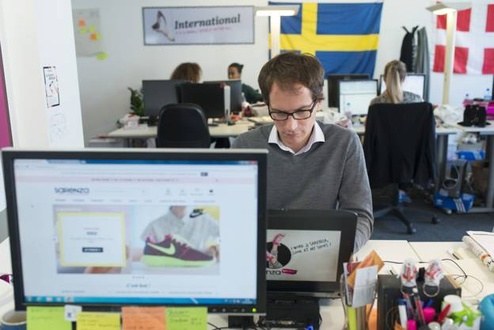

Expert d'Internet et du marketing, le traffic manager imagine, met en place et suit les résultats d'une campagne publicitaire sur Internet. Ses objectifs : donner plus de visibilité à une entreprise, faire la promotion d'un produit ou d'un service. Sa bonne connaissance du secteur et des habitudes des internautes lui permet de conseiller les meilleurs emplacements à ses clients (ou à son patron) à qui il présente régulièrement les résultats de son travail (sous forme de tableaux de bord, de chiffres de fréquentation, de statistiques...). Pour cela, il scrute les clics des utilisateurs, le temps passé sur certaines pages, les mots tapés dans les moteurs de recherche, etc.
Developpeur d'applications  Ingenieure/e cloud computing